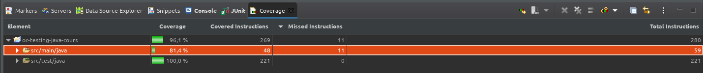

JUnit & ses Annotations¶
Annotations Standards¶
@BeforeEach¶
Exécutez une méthode avant chaque test. C’est un très bon emplacement pour installer ou organiser un prérequis pour vos tests.
@AfterEach¶
Exécutez une méthode après chaque test. C’est un très bon emplacement pour nettoyer ou satisfaire à une postcondition.
@BeforeAll¶
Désignez une méthode statique pour qu’elle soit exécutée avant tous vos tests. Vous pouvez l’utiliser pour installer d’autres variables statiques pour vos tests.
@AfterAll¶
Désignez une méthode statique pour qu’elle soit exécutée après tous vos tests. Vous pouvez utiliser ceci pour nettoyer les dépendances statiques.
@ParametrizedTest¶
Vous souhaitez réutiliser le même test avec plusieurs entrants (@ValueSource) voire plusieurs entrants/sortants (@CsvSource).
@Timeout¶
Si vous testez une méthode qui ne doit pas être trop lente, vous pouvez la forcer à échouer le test.
Annotations Avancées¶
@tag¶
On peut catégoriser un test grace a cette annotation . un test peut avoir plusieurs tag exemple:
@tag("le nom de la catégorie des tests")
@DisplayName¶
Permet de nommer les tests de facon plus lisible que le nom de la methode test exemple :
@DisplayName ("Soit une entrée de valeur positive, lorsqu'on applique la méthode , alors on doit avoir comme résultat ... ")
@Nested¶
Permet de grouper vos tests dans une classe interne. Si un seul test echoué , le groupe échoue example:
@Nested @Tag("TemperatureTests") @DisplayName("Réussir à convertir des températures") class TemperatureTests { @Test @DisplayName("Soit une T° à 0°C, lorsque l'on convertit en °F, alors on obtient 32°F.") public void celsiusToFahrenheit_returnsAFahrenheitTempurature_whenCelsiusIsZero() { Double actualFahrenheit = calculatorUnderTest.celsiusToFahrenheit(0.0); assertThat(actualFahrenheit).isCloseTo(32.0, withinPercentage(0.01)); } @Test @DisplayName("Soit une T° à 32°F, lorsque l'on convertit en °C, alors on obtient 0°C.") public void fahrenheitToCelsius_returnsZeroCelciusTempurature_whenThirtyTwo() { Double actualCelsius = calculatorUnderTest.fahrenheitToCelsius(32.0); assertThat(actualCelsius).isCloseTo(0.0, withinPercentage(0.01)); } }
@ExtendWith¶
Permet de modifier le déroulement des tests menés par Junit5 entre autre uitlisation d’un logger class de log pour afficher les messages dans un log ou une sortie standard out au lieu d’utiliser des println
@Disable¶
placé juste au dessus @test , permet de taire un test pour le moment et de pouvoir y revenir aprés. Mettre un commentaire pour expliquer ex:
@Disable("Stoppé car cela arrive tous les mardis")
AssertJ¶
c’est une librairie permettant d’utiliser des Assertions plus parlantes pour l’utilisateur.
Elle est intéressante car elle comporte différents modules à utiliser pour des cas particuliers: exemple assertJ DB Module
Voir aussi
ci joint le lien vers la doc <https://assertj.github.io/doc/> <https://www.javadoc.io/doc/org.assertj>
La couverture du code¶
La couverture des test = quantité de code couverte par les test / quantité de codes total
Pour connaitre la couverture du code par les tests, il faut d’abord savoir sur quel critére on se base pour compter la quantité de code :
le nombre de lignes
le nombres d’instructions
le nombre de branches (ensemble d’instruction IF/else Try/catch
le nombre de methodes/fonctionnels
EclEmma(Eclipse)¶
il suffit d’utiliser le « coverage as » JUnit Test sur la classe Test.
{kind=link}
résultat s’affiche avec le pourcentage total aussi bien avec src/main que src/test qui nous intéresse pas puisque c’est le code du test
JACOCO¶
Java Codes Coverage
Donne un rapport sur page html avec uniquement le pourcentage de couverture de code sur le src/main
Config¶
- rajouter le plugin jacoco-maven-plugin
<plugin> <groupId>org.jacoco</groupId> <artifactId>jacoco-maven-plugin</artifactId> <version>0.8.5</version> <executions> <execution> <goals> <goal>prepare-agent</goal> </goals> </execution> <execution> <id>report</id> <phase>test</phase> <goals> <goal>report</goal> </goals> </execution> </executions> </plugin>
Excecution¶
Executer dans le terminal:
$ mvn clean package
ce qui va créer dans target/ un fichier index.html avec le rapport de jacoco